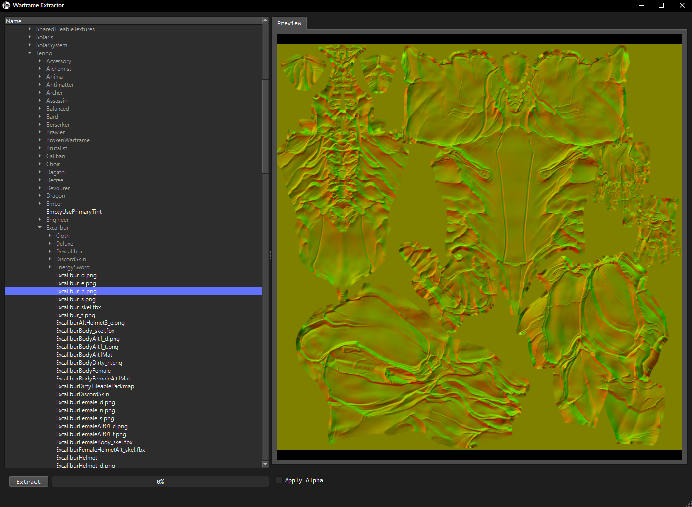

Using the Extractor
GUI Extractor
Download the latest tagged release from the GitHub make sure you download the zip file, as this is the release that contains the UI.
Extract to a folder you will remember.
Run Warframe-Exporter.exe and the options window will pop up.
{kind=link}
- Pressing the ? in the top right of this window will let you click on each section of the exporter and get tooltips on what to do with the options.
- Inside the Warframe installation directory, there is a folder, "Cache.Windows" Typically Warframe is installed under C:\Steam\steamapps\common\Warframe\, if it is not search up how to find it on the internet.
- This is the path that the Exporter will extract all the files to.
- These options let you chose what kinds of files will be exported and shown in the file view.
- Here you can change the output format for the textures, your options are DDS, PNG or TGA.
- This menu holds other miscellaneous options that some people may find useful, currently only filter by filetype selected (on by default).
You can navigate the file tree using the mouse, or the arrow keys.
To extract a file, select the file you want and then click the extract button, to extract a directory select that directory and then click on the export button.
The UI supports previewing textures, material data and basic 3d model previews.

{kind=link}
To extract a file you select the file in the file tree and press the extract button, this works the same with directories as with files.
Finding the files you wish to extract may prove a hassle however you can use tools like Omni.wf or the empx uniqueName manifest to search for an item, however these paths wont be the full correct path to the file.
For example, searching for "Sevagoth" on omni.wf gives us the path "/Lotus/Powersuits/Wraith/Wraith", to actually extract his files we will want to look in the "/Lotus/Characters/Tenno/" for a directory named "Wraith".
For more information on the internal paths you can check out the Internal Paths
CLI Extractor
For Advanced Users.
Video Explanation
Downloading the Extractor
Firstly head over to the releases page for the Extractor on GitHub and download the file called Warframe-Exporter-CLI-Advanced.exe.
Secondly create a folder for the extractor as well as the files it will be extracting and then put Warframe-Exporter-CLI.exe inside that folder.
Using the Extractor
Open your terminal of choice and change to the directory you put the binary in.
If you want to check it is working execute it with the version flag .\Warframe-Exporter.exe --version.
You need to find where your Cache.Windows directory is stored, this will usually be in the Warframe root directory.
These could be:
- Steam:
C:\Program Files\Steam\steamapps\common\WarframeorC:\Program Files (x86)\Steam\steamapps\common\Warframe. - Epic Games Store:
C:\Program Files\Epic Games\WarframeorC:\Program Files (x86)\Epic Games\Warframe. - Standalone launcher:
C:\Users\<USERNAME>\AppData\Local\Warframe\Downloaded\Public. - Proton:
/home/$USER/.local/share/Steam/steamapps/common/Warframe/.
https://wiki.warframe.com/w/File_Directory